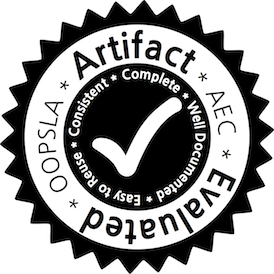

Anthony W. Lin's Publications
On this page, you will find pre-print versions of my writings in a chronological
order (recent one first). Author names are often ordered alphabetically as
commonly done in theoretical computer science and mathematics, though I also
do reverse-alphabetical order just for fun. All papers can
be downloaded for personal or research purposes only. If a paper (or a full
version thereof) is not available here, you may send me an email to obtain it.
Peer-Reviewed Publications
- The Power of Hard Attention
Transformers on Data Sequences: A Formal Language Theoretic
Perspective. Accepted in NeurIPS'24. (Joint with Pascal
Bergstraesser, Chris Koecher and Georg Zetzsche)
- Logical Languages Accepted by Transformer Encoders with Hard
Attention. In ICLR'24. (Joint with Pablo Barcelo,
Alexander Kozachinskiy, and Vladimir Podolskii)
- Regular Abstractions for
Array Systems. In POPL 2024.
(Joint with Chih-Duo Hong)
- Ramsey Quantifiers in Linear Arithmetic. In POPL 2024.
(Joint with Pascal Bergstraesser, Moses Ganardi and Georg Zetzsche)
- Parikh's Theorem Made Symbolic. In POPL 2024.
(Joint with Matthew Hague and Artur Jeż)
- Concurrent Stochastic Lossy Channel Games.
In CSL 2024. (Joint with Daniel Stan, Parosh Abdulla and Muhammad
Najib)
- Characterising and Verifying the Core in Concurrent Multi-Player
Mean-Payoff Games. In CSL 2024. (Joint with Julian
Gutierrez, Muhammad Najib, Thomas Steeples and Michael Wooldridge)
- Decision Procedures for Sequence
Theories. In Computer Aided Verification (CAV), 2023. (Joint
with Artur Jeż, Oliver Markgraf, and Philipp Ruemmer)
- Reasoning on Data Words over Numeric Domains. In Logic in
Computer Science (LICS), 2022. (Joint with Diego Figueira)
- Ramsey Quantifiers over Automatic Structures: Complexity and
Applications to Verification. In Logic in Computer
Science (LICS), 2022. (Joint with Pascal Bergstraesser, Moses Ganardi
and Georg Zetzsche)
- Data Path Queries over Embedded
Graph Databases. In Principles of Database Systems (PODS),
2022. (Joint with Diego Figueira and Artur Jeż)
- CertiStr: A Certified String Solver. In
CPP 2022.
(Joint with Shuanglong Kan, Philipp Ruemmer, and Micha Schrader)
[Distinguished Paper Award]
-
Solving String Constraints With Regex-Dependent Functions Through Transducers
With Priorities And Variables. In POPL 2022. (Joint with T.
Chen, M. Hague, Z. Han, D. Hu, S. Kan, A. Lamas, P. Ruemmer, and Z. Wu)
- Regular Model Checking
Revisited. In Bengt Jonsson's Festschrift, 2021.
(with Philipp Ruemmer)
-
Quadratic Word Equations with Length Constraints, Counter Systems, and
Presburger Arithmetic with Divisibility. Logical Methods in Computer
Science, October 29, 2021, Volume 17, Issue 4. (with
Rupak Majumdar) [Extended abstract was
published in ATVA'18]
- Rational Verification for
Probabilistic Systems. In KR'21. (with Julian Gutierrez,
Lewis Hammond, Muhammad Najib and Michael Wooldridge)
- Learning Union of Integer
Hypercubes with Queries (with Applications to Monadic
Decompositions). In CAV'21. (with Oliver Markgraf and Daniel
Stan)
- Regular Model Checking
Approach to Knowledge Reasoning over Parameterized Systems.
In AAMAS'21. (with Daniel Stan)
- Parameterized Synthesis
with Safety Properties. In APLAS'20. (with Oliver Markgraf,
Chih-Duo Hong, Muhammad Najib, and Daniel Neider)
- A Decision Procedure for Path
Feasibility of String Manipulating Programs with Integer Data
Type. In ATVA'20. (with Taolue Chen, Matt Hague, Denghang Hu,
Philipp Ruemmer, and Zhilin Wu)
- Monadic Decomposition in
Integer Linear Arithmetic. In IJCAR'20. (with Matt Hague,
Philipp Ruemmer, and Zhilin Wu)
- Probabilistic Bisimulation for Parameterized
Systems (with
applications to verifying anonymous protocols). In CAV'19. (with Chih-Duo Hong, Rupak Majumdar, and Philipp
Ruemmer)
- Monadic Decomposability of Regular
Relations. In
ICALP'19. (with Pablo Barcelo, Chih-Duo Hong, Xuan Bach Le, and
Reino Niskanen)
- CSS Minification via Constraint
Solving. Recently accepted in ACM Transactions of Programming
Languages and Systems, to be presented at POPL'19. (with Matthew Hague
and Chih-Duo Hong)
- Decision Procedures for
Path Feasibility of String-Manipulating
Programs with Complex Operations. In POPL'19. (with Taolue
Chen, Matt Hague, Philipp Rümmer, and Zhilin Wu)
[Click here for our
solver OSTRICH.]
- Complexity Analysis of Tree Share
Structure. In APLAS'18. (Joint with Xuan-Bach Le and
Aquinas Hobor)
- Decidable models of integer-manipulating
programs with recursive parallelism. Accepted in 2018 for publications in
Theoretical Computer Science, Special Issue of Reachability Problems (RP)
2016. (with Matthew Hague) [The conference version can be found here]
- String Constraints with
Concatenation and Transducers Solved Efficiently, In POPL'18.
(Joint with Lukas Holik, Petr Janku, Philipp Ruemmer, and Tomas Vojnar)
- What is Decidable About String Constraints with ReplaceAll
Function, In POPL'18. (Joint with Taolue Chen, Yan Chen, Matthew Hague,
and Zhilin Wu)
- Learning to Prove Safety over Parameterised Concurrent Systems, In Proceedings of Formal Methods in Computer-Aided Design (FMCAD),
2017. (Joint with Yu-Fang Chen, Chih-Duo Hong, and Philipp Ruemmer)
- Fair Termination for Parameterized Probabilistic Concurrent
Systems, In Proceedings of 23rd International Conference on Tools and Algorithms for the Construction and Analysis of Systems (TACAS), 2017. (Joint with Ondrej
Lengal, Rupak Majumdar, and Philipp Ruemmer)
- Decidability and Complexity of Tree Share
Formulas, In Proceedings of Foundations of
Software Technology and Theoretical Computer Science (FSTTCS), 2016.
(with Xuan Bach Le and Aquinas Hobor)
- Liveness of Randomised Parameterised Systems under Arbitrary Schedulers, In Proceedings of Computer Aided Verification
(CAV), 2016.

(with Philipp Ruemmer)
[Click here for the tool SLRP]
[Click here for my slides for the
conference talk]
- String Solving with Word Equations and
Transducers: Towards a Logic for Analysing Mutation XSS.
In Proceedings of POPL 2016. (with Pablo Barcelo)
[Click here for my slides for
the conference talk.]
- Regular Symmetry Patterns.
In Proceedings of VMCAI 2016. (with Truong Khanh Nguyen, Philipp Ruemmer, and Jun Sun)
[Click here for the
slides from my conference talk.]
- A linear-time algorithm for the
orbit problem over cyclic groups.
Acta Informatica, 53(5): 493-508 (2016). (with Sanming Zhou) [Full version of a
CONCUR'14 paper nominated for Best
Paper Award]
- Detecting Redundant CSS Rules in HTML5
Applications: A Tree-Rewriting
Approach. In Proceedings of OOPSLA, 2015.
(with Matt Hague and Luke Ong)
[Click here
for the tool; Click here for the
slides from conference talk]
- Expressive Path Queries on
Graphs with Data. Logical Methods in
Computer Science, 11(4): (2015). [Full version of an LPAR'13 paper]. (with Pablo Barcelo and Gaelle
Fontaine)
- Refining
the Process Rewrite Systems Hierarchy via Ground Tree Rewrite
Systems. ACM Transactions on Computational
Logic, 15(4): (2014). [Full version of a CONCUR'11 paper] (with Stefan Goller)
- Analysis of Probabilistic Basic
Parallel Processes. In Proceedings of
FoSSaCS, 2014. (with Remi Bonnet and Stefan Kiefer)
- Accelerating Tree Automatic Relations.
In Proceedings of FSTTCS, 2012.
- Weakly-Synchronized Ground Tree Rewriting
(with Applications to Verifying Multithreaded Programs). In Proceedings of
MFCS, 2012. [Slides]
- Synchronisation- and Reversal-Bounded Analysis
of Multithreaded Programs with Counters. In Proceedings of CAV, 2012 (with
Matthew Hague)
- Concurrency Makes Simple Theories Hard.
In Proceedings of STACS, 2012. (with Stefan Göller)
- Expressive Languages for Path Queries over
Graph-structured Data. ACM Transactions on Database
Systems 37(4):31 (2012)
(with Pablo Barcelo, Leonid Libkin, and Peter Wood)
- Model Checking Recursive Programs with
Numeric Data Types, In Proceedings of
Computer Aided Verification (CAV), 2011.
(with Matthew Hague)
- The Complexity of Verifying Ground Tree
Rewrite Systems, In Proceedings of Logic in Computer Science (LICS), 2011.
(with Stefan Göller)
- The Complexity of Model Checking
(Collapsible) Higher-Order Pushdown Systems, In Proceedings of
FSTTCS 2010.
(with Matthew Hague)
- Parikh Images of Grammars: Complexity and
Applications, In Proceedings of Logic in Computer science (LICS), 2010. (with
Eryk Kopczynski)
- Parikh Images of Regular Languages:
Complexity and Applications, accepted at LICS'10 after
merging. (Kleene Award for Best Student Paper)
(arXiv link)
- Algorithmic metatheorems for decidable LTL model checking over infinite systems, In Proceedings of Foundations of Software Science and Computation Structures (FoSSaCS), 2010. (with Leonid
Libkin)
- Logical Queries
over Views: Decidability and Expressiveness, ACM Transactions on
Computational Logic 11(2): (2010). (with James Bailey and Guozhu
Dong)
- Model checking FO(R) over one-counter
processes and beyond, In Proceedings of Computer Science Logic
(CSL), 2009.
- On the Computational Complexity of Verifying
One-Counter Processes,
In Proceedings of Logic in Computer Science (LICS), 2009. (with
Stefan Göller and Richard Mayr)
- Unary finite automata vs.
arithmetic progressions, Information Processing Letters,
2009.
- Recurrent Reachability Analysis in Regular Model
Checking, In Proceedings of 15th International Conference on Logic for Programming
Artificial Intelligence and Reasoning (LPAR), 2008.
(with Leonid Libkin)
Thesis
- Model Checking Infinite-State Systems:
Generic and Specific Approaches. PhD thesis, School of
Informatics, University of Edinburgh, August 2010.
- On Unary-conjunctive-view Queries. Undergraduate thesis, Department of
Computer Science and Software Engineering, University of Melbourne,
2004.
Miscellaneous
- Book review of Algebraic Complexity Theory. Appeared in ACM SIGACT
Newsletter, Issue 2, June 2006.
- The Limits of Computations, appeared in the February edition of the
Journal of Young Investigators 2004.
(ps|pdf)
- Book review of Algorithms Sequential and Parallel A Unified Approach.
Appeared in ACM SIGACT Newsletter, issue 2, June 2003. (view)
Anthony Widjaja Lin